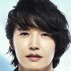
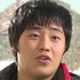
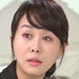

Secret garden, plot
Kim Joo-Won (Hyun-Bin) is from a wealthy family, smart and good looking. He runs the luxurious Roel Department store, which his family owns. Oska (Yoon Sang-Hyun) is a popular singer around Asia, but he doesn't have musical talent. He is also a womanizer. Joo-Won and Oska are also cousins and highly competitive towards each other.
On a request by Oska, Joo-Won goes to pick up actress Park Chae-Rin from a shooting set. Joo-Won mistakes stunt woman Gil Ra-Im (Ha Ji-Won) for Park Chae-Rin and takes stunt woman Ra-Im to a hotel. Oska made the request in an attempt to prevent Park Chae-Rin from revealing their relationship to the press. At the hotel, Joo-Won discovers that the woman he picked is not actress Park Chae-Rim but a stunt woman. During this time, Joo-Won starts to experience strong feelings for the feisty stunt woman, even though she isn't his type. Joo-Won tried getting Ra-Im out of his mind for Ra-Im does not own a high status life nor is even rich. Nevertheless, Joo-Won can't stop thinking about Ra-Im.
Later, Joo-Won sneaks into an action school to watch Ra-Im. Meanwhile, Ra-Im tries her best to ignore Joo-Won because she knows Joo-Wan belongs to another higher social level compared to her. Nevertheless, Ra-Im can't help her blooming feelings towards Joo-Won.
Yeun-Sul (Kim Sa-Rang) and Oska are ex-lovers, but they can't seem to forget each other. Because Yeun-Sul had a high-living status, she was arranged to attend a blind date with Joo-Won. Even though Joo-Wan made it clear that he doesn't have interest in her, Yeun-Sul keeps pursuing Joo-Won. Yeun-Sul knows Joo-Wan is Oska's cousin and wants to use him to get under Oska's skin. Yeun-Sul then manages to become the director for Oska's next music video, which is scheduled to be shot on Jeju Island.
Meanwhile, stunt woman Ra-Im is a fan of Oska's music and wins a contest to go to Jeju Island with Oska himself. Ra-Im also wanted to take part in Oska's music video. Joo-Won learns that Ra-Im won the contest to spend time with Oska and decides to follow them to Jeju Island.
On Jeju Island, the main participants all gather. While they were mountain biking, Ra-Im gets separated from Joo-Won and Oska. Joo-Won searched frantically to find Ra-Im. Eventually, Joo-Won was able to find Ra-Im but ended up stranded in a mysterious restaurant in the middle of the woods called 'Secret Garden'. Even more mysteriously, the owner of 'Secret Garden' seems to know both Joo-Won and Ra-Lim very well. The owner presented two bottles of homemade floral wine to Joo-Won and Ra-Im. They manage to find their way back to the hotel before night and went their separate ways. At night, neither Joo-Won nor Ra-Im find themselves able to sleep and each takes this time to clear their mind while drinking their individual gifted wine. A twist of intrigue takes place in the plot when both Ra-Im and Joo-Won wake up in the morning to find that their souls have switched to the other's body!
Cast
|
Ha Ji-Won Kil Ra-Im stunt woman |
Hyun-Bin Kim Joo-Won pres. of dept. store |
Jang Seo-Won Hwang Jung-Hwan stunt man |
||
|

Yoon Sang-Hyun Oska pop star |
Kim Sa-Rang Yeun-Sul CF director |

Phillip Lee Im Jong-Soo action director |
Lee Jong-Suk Han Tae-Sun musician |
Yoo In-Na Min Ah Young dept. store worker |
|
Kim Ji-Sook Moon Yeon-Hong Oscar's mom |
Park Jun-Keum Moon Boon-Hong Joo-Won's mom |
Kim Sung-Oh Kim Sung-Oh Joo-Won's secretary |
Choi Yoon-So Kim Hee-Won Joo-Won's sister |
Kim Seong-Kyeom Moon Chang-Soo Joo-Won's granddad |
|
Lee Byung-Joon Park Bong-Ho dept. store director |
Seong Byeong-Suk Park Bong-Hee Chang-Soo's wife |
Yun Ki-Won Choi Dong-Kyu president of Oscar Ent. |

Kim Gun Yoo Jong-Hun Oscar's manager |

Yoo Seo-Jin Lee Ji-Hyun Joo-Won's shrink |